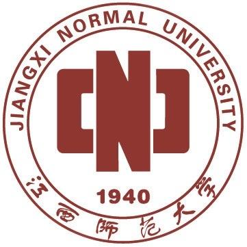

学校章程
序 言
江西师范大学肇基于1940年创建的国立中正大学。中正大学于1949年更名为南昌大学，1953年全国院系调整后改为江西师范学院，1969年更名为江西井冈山大学，1972年复名为江西师范学院，1983年更名为江西师范大学。2003年，江西金融职工大学（江西银行学校）整建制并入学校。
为推动学校依法办学与自主管理，保障学生和教职工合法权益，根据《中华人民共和国教育法》、《中华人民共和国高等教育法》、《中华人民共和国教师法》、《高等学校章程制定暂行办法》等法律、法规、规章和有关规定，结合学校实际，制定本章程。
第一章 总 则
第一条 学校名称为江西师范大学，简称江西师大，英文名称为Jiangxi Normal University，缩写为JXNU。
第二条 学校法定注册地址为江西省南昌市紫阳大道99号。学校有瑶湖、青山湖和共青城三个校区,学校可根据办学需要设立和调整校区及地址。学校网址：http://www.jxnu.edu.cn/。
第三条 学校由江西省人民政府举办,江西省教育厅主管, 是江西省人民政府与教育部共建的全日制普通高等学校,接受举办者的管理和监督。
学校是非营利性教育事业单位，具有独立法人资格，依法享有办学自主权，独立承担法律责任。
学校的登记管理机关是江西省事业单位登记管理局。
第四条 学校坚持社会主义办学方向，全面贯彻执行党的路线方针政策，贯彻执行党的教育方针，坚持立德树人，依法治校，依靠全校师生员工推动学校科学发展，培养德智体美全面发展的中国特色社会主义事业合格建设者和可靠接班人。
第五条 学校以人才培养为核心，履行科学研究、服务社会、文化传承创新等职能，致力于建设特色鲜明的高水平教学研究型师范大学。
第六条 学校实行中国共产党江西师范大学委员会领导下的校长负责制，坚持党委领导、校长负责、教授治学、民主管理，坚持依法治校。
第二章权利与义务
第七条 学校由举办者和教育行政部门按照政校分开、管办分离的原则依法进行管理和监督，尊重和保障学校的独立事业单位法人地位和办学自主权，提供办学资源和保障办学经费，规范学校办学行为，考核学校办学水平，监测学校教育质量。
第八条 学校依法享有下列权利：
（一）按照国家法律、法规及规章和学校章程自主管理学校内部事务；
（二）招收学生，实施奖励或处分，颁发相应的学历证书，授予学位；
（三）组织教学、科研及社会服务活动；
（四）组织开展与境内外高等学校和研究机构的交流与合作；
（五）设置内部组织机构，聘任教职工，调整工资和津贴分配，实施奖励或处分；
（六）收取学费及有关费用，使用政府拨款，接受社会捐赠；
（七）使用和管理学校资产；
（八）法律、法规及规章规定的其他权利。
第九条 学校依法履行下列义务：
（一）遵守国家宪法、法律和法规；
（二）执行国家教育教学标准，保障教育教学质量；
（三）维护与保障教职工和学生的合法权益；
（四）遵守国家收费政策，公开收费项目和标准；
（五）保护学校资产不被侵占、破坏和流失；
（六）依法接受监督。
第三章 学 生
第十条 学生是指被学校依法录取、取得入学资格、具有学校学籍的受教育者。
第十一条 学生依法享有下列权利：
（一）按规定条件和程序选择专业与课程；使用学校教育、科研等公共资源，接受学校教育；
（二）获得在国内外学习深造和参加学术文化交流活动的机会；
（三）在规定的修业年限内学完规定的课程，成绩合格或者修满相应的学分，获得学历证书及学位证书；
（四）可以在校内组织学术团体，并在法律、法规及规章规定的范围内活动，服从学校的领导和管理；
（五）申请和获得各种奖励、资助和荣誉称号；
（六）知晓学校改革、建设和发展及涉及切身利益的重大事项；参与民主管理，对学校工作提出意见和建议；
（七）对纪律处分和涉及自身利益的相关决定表达异议和提出申诉；
（八）享有法律、法规、规章及学校规定的其他权利。
第十二条 学生依法履行下列义务：
（一）遵守法律、法规及规章和学校的各项管理制度；
（二）努力学习马克思列宁主义、毛泽东思想、邓小平理论，树立爱国主义、集体主义和社会主义思想；
（三）遵守学生行为规范，维护社会公德，尊敬师长，团结同学，诚实守信；
（四）刻苦学习，完成学业，掌握较高的科学文化知识和专业技能；积极参加校内外的体育活动，增强体质，健全人格；
（五）维护学校利益和声誉；
（六）按照国家规定缴纳学费；
（七）爱护并合理使用教育、科研设备和生活设施；
（八）履行法律、法规、规章及学校规定的其他义务。
第十三条 学校对在德、智、体、美等方面全面发展或在思想品德、学业成绩、科研创新、锻炼身体及社会服务等方面表现突出的学生，给予表彰和奖励。
对有违规、违纪行为的学生，给予批评教育或者纪律处分。
对违反学籍管理规定的学生依法给予取消入学资格、退学、肄业等处理。
第十四条学校建立学生权利保护和资助机制，维护学生合法权益。
第十五条 学校建立重大事项会议列席、听证、座谈和新闻发布制度，鼓励和支持学生参加学校的民主管理，对学校的工作提出意见或建议。
第十六条 学校学生代表大会（研究生代表大会）是学生（研究生）参与学校民主管理和监督的重要组织形式，学生代表大会（研究生代表大会）选举产生的学生代表大会（研究生代表大会）常务委员会或学生会（研究生会）主席团是其常设机构，分别按照其章程行使职权、履行职责。
第四章 教职工
第十七条 学校教职工由专业技术人员、管理人员和工勤人员等组成。教师须获得教师资格认证；其他专业技术人员、管理人员和工勤人员应当具备良好的职业道德并具有专业知识、专门技能，以及与岗位履职相应的资质或资格认证。
第十八条 教职工依法享有下列权利：
（一）获得自身发展所需要的相应工作机会和条件，获取劳动报酬；
（二）使用学校的公共资源，享受福利待遇；
（三）在品德、能力和业绩等方面获得公正评价；
（四）获得各种奖励和荣誉称号；
（五）知晓学校改革、建设和发展及涉及切身利益的重大事项；
（六）参与民主管理，对学校工作提出意见和建议；
（七）保护自身合法权益不受侵犯；就职务晋升、福利待遇、评优评奖、纪律处分等事项表达异议和提出申诉，并按学校申诉制度得到合理申诉处理；
（八）聘约规定的权利；
（九）法律、法规、规章及学校规定的其他权利。
第十九条 教职工依法履行下列义务：
（一）依法开展教学、科研和岗位要求的工作，参与教学改革、学科建设和社会服务等工作；
（二）为人师表，不断提高师德修养，尊重和爱护学生，尊重和团结同事；
（三）维护学校利益和声誉；
（四）遵守学校规章制度；
（五）履行聘约规定的义务；
（六）承担法律、法规、规章及学校规定的其他义务。
第二十条 学校对教职工实行相应的聘任、聘用制度：
（一）教师的资格认证和职务聘任制度；
（二）其他专业技术人员的专业技术职务聘任制度；
（三）管理人员的聘任制度；
（四）工勤人员的聘用制度。
第二十一条 学校实行岗位目标责任制。学校对教职工定期进行考核，考核结果作为对各类人员任用、晋升和奖惩的依据。
第二十二条 学校充分尊重教师，为教师的发展营造良好的环境，为教师开展教学、科学研究和社会服务等活动提供必要的条件与保障，并对做出重大贡献的教师予以奖励。
对不履行义务、违反学校纪律、损害学校利益或对学校造成重大不良影响的教职工,进行批评教育或者依照法律、法规、规章和学校有关规定给予警告、记过、降低岗位等级或者撤职、开除处分。
第五章 职能与理念
第二十三条 学校以人才培养为中心，以促进师生发展为根本，实行人才强校战略，通过传授、创造和应用知识，传承创新文化，服务国家人民，推动社会进步，促进人类文明发展。
第二十四条 学校主要开展全日制本科生和研究生教育，适当开展继续教育等其他类型的教育。
第二十五条 学校坚守教师教育的传统和特色，致力于培养引领教育发展的优秀教师和教育家。学校坚持教师教育与非教师教育并举，积极实施学科非均衡发展战略，努力构建良好的学科生态系统，推动实现各类学科科学发展。
第二十六条 学校树立以“学”为中心的教育理念，以学分制为基本教学管理制度，着力培养学生的社会责任感、创新精神和实践能力。
第二十七条 学校尊重并依法保障学术自由，营造创新环境，鼓励师生积极开展基础研究和应用研究，推动学术进步和科技创新，普及科学知识，促进成果转化，为经济建设和社会发展服务。
第二十八条 学校积极推进教育国际化工作，依法自主开展对外合作与交流。
第二十九条 学校根据教育规律、发展需要和社会要求，依法自主动员组织和优化配置资源开展教学、科研和社会服务，确定和调整办学行为、办学规模、办学层次、办学结构和学历教育修业年限。
第三十条 学校根据实际需要依法自主确定校内的机构设置和人员配备、议事决策的规则和程序，建立健全办学质量保障、办学信息公开、办学行为监督的体系和机制。
第三十一条 学校设立附属中学、附属小学、附属幼儿园等附属机构，面向师生员工和社会提供服务，依照有关法律、法规及规章管理和运行。
第六章 组织与机构
第一节 党委
第三十二条 中国共产党江西师范大学委员会（以下简称学校党委）统一领导学校工作，支持校长按照《中华人民共和国高等教育法》的规定，积极主动、独立负责地开展工作，行使职权。
学校党委由中国共产党江西师范大学党员代表大会选举产生，其主要职责是：
（一）讨论决定事关学校改革发展稳定及教学、科研、行政管理中的重大事项和基本管理制度；
（二）坚持党管干部原则，按照干部管理权限负责干部的选拔、教育、培养、考核和监督，讨论决定学校内部组织机构的设置及其负责人的人选，依照有关程序推荐校级领导干部和后备干部人选。做好老干部工作；
（三）坚持党管人才原则，讨论决定学校人才工作规划和重大人才政策，创新人才工作体制机制，优化人才成长环境，统筹推进学校各类人才队伍建设；
（四）领导学校思想政治工作和德育工作，坚持用中国特色社会主义理论体系武装师生员工头脑，培育和践行社会主义核心价值观，牢牢掌握学校意识形态工作的领导权、管理权、话语权。维护学校安全稳定，促进和谐校园建设；
（五）加强大学文化建设，发挥文化育人作用，培育良好校风学风教风;
（六）加强对学校院（系）等基层党组织的领导，做好发展党员和党员教育、管理、服务工作，发展党内基层民主，充分发挥基层党组织的战斗堡垒作用和党员的先锋模范作用。加强学校党委自身建设;
（七）领导学校党的纪律检查工作，落实党风廉政建设主体责任，推进惩治和预防腐败体系建设;
（八）领导学校工会、共青团、学生会等群众组织和教职工代表大会。做好统一战线工作;
（九）讨论决定其他事关师生员工切身利益的重要事项。
学校党委会是学校党委实行集体领导、科学民主决策的主要形式。党委会由党委书记召集主持，须有三分之二以上党委委员出席会议，列席人员由会议主持人确定，对必须表决的事项，赞成票超过应出席人数的半数为通过。学校重大事项的决策由党委会按其议事规则决定。
第三十三条 中国共产党江西师范大学纪律检查委员会是学校的党内监督机构，在学校党委和上级纪委的领导下开展工作，全面落实监督责任，围绕学校中心工作，检查党的路线、方针、政策、决议及学校重大决策的执行情况，整体推进惩治和预防腐败各项工作。
学校纪律检查委员会由中国共产党江西师范大学党员代表大会选举产生，其主要职责是：
（一）维护党的章程和其他党内法规，对党员进行遵纪守法教育，做出关于维护党纪的决定；
（二）检查党组织和党员贯彻执行党的路线、方针、政策和决议的情况，对党员领导干部行使权力进行监督；
（三）协助学校党委加强党风建设和组织协调反腐败工作，推进廉洁教育和廉政文化建设；
（四）检查、处理党的组织和党员违反党的章程和其他党内法规的案件，按照有关规定决定或取消对这些案件中的党员处分；
（五）受理党员的控告和申诉，保障党章规定的党员权利不受侵犯；
（六）党内法规规定的其他职责。
第二节 校长
第三十四条 校长是学校法定代表人和最高行政负责人，全面负责学校的教学、科学研究和其他行政管理工作，依法行使下列职权：
（一）组织拟订和实施学校发展规划、基本管理制度、重要行政规章制度、重大教学科研改革措施、重要办学资源配置方案。组织制定和实施具体规章制度、年度工作计划；
（二）组织拟订和实施学校内部组织机构的设置方案。按照国家法律和干部选拔任用工作有关规定，推荐副校长人选，任免内部组织机构的负责人；
（三）组织拟订和实施学校人才发展规划、重要人才政策和重大人才工程计划。负责教师队伍建设，依据有关规定聘任与解聘教师以及内部其他工作人员；
（四）组织拟订和实施学校重大基本建设、年度经费预算等方案。加强财务管理和审计监督，管理和保护学校资产；
（五）组织开展教学活动和科学研究，创新人才培养机制，提高人才培养质量，推进文化传承创新，服务国家和地方经济社会发展，把学校办出特色、争创一流；
（六）组织开展思想品德教育，负责学生学籍管理并实施奖励或处分，开展招生和就业工作；
（七）做好学校安全稳定和后勤保障工作；
（八）组织开展学校对外交流与合作，依法代表学校与各级政府、社会各界和境外机构等签署合作协议，接受社会捐赠；
（九）向党委报告重大决议执行情况，向教职工代表大会报告工作，组织处理教职工代表大会、学生代表大会（研究生代表大会）、工会会员代表大会和团员代表大会有关行政工作的提案。支持学校各级党组织、民主党派基层组织、群众组织和学术组织开展工作；
（十）履行法律法规和学校章程规定的其他职权。
校长办公会是校长行使职权的基本形式，校长办公会由校长召集主持，须有三分之二以上成员出席会议，列席人员由会议主持人确定。校长办公会按其议事规则，研究、决定学校行政工作方面的重要事项。校长办公会根据需要邀请教师与学生代表列席。
校长行使职权、履行职责，实行校长统一领导、副校长分工负责、职能部门组织实施的工作机制。
第三节 学术组织机构
第三十五条 学校设立学术委员会。学校依据《高等学校学术委员会规程》，结合学校实际制定《江西师范大学学术委员会章程》。学校学术委员会作为校内最高学术机构，统筹行使学术事务的决策、审议、评定和咨询等职权，根据其章程履行职责和开展工作。校学术委员会组成人员根据章程选举产生，主任、副主任及委员由校长聘任。
学术委员会审议或评定的主要事项包括：
（一）学科、专业及教师队伍建设规划，以及科学研究、对外学术交流合作等重大学术规划；
（二）学术机构设置规划方案；
（三）学校教师职务聘任的学术标准与办法；
（四）科研成果评价标准及考核办法；
（五）自主设立科研基金、项目类别、科研奖项等；对外推荐教学、科学研究成果奖；
（六）学术评价、争议处理规则，学术道德规范；
（七）各学院学术分委员会章程；各专门委员会章程的制定或修订；
（八）学校认为需要提交审议的其它学术事务。
学术委员会有关学科专业设置、教学评价等方面的职责授权教学委员会、学位评定委员会按照各自章程处理。
第三十六条 学校设立教学委员会。学校依据有关规定，结合学校实际制定《江西师范大学教学委员会章程》。学校教学委员会是学校教学工作的管理、审议和决策咨询机构，根据其章程履行职责和开展工作。
教学委员会的主要职责是：
（一）对学校的教学工作提出指导意见和建议；
（二）研究教学工作中的重大问题，审议职能部门提出的教学资源配置原则和方案、教学工作规程、年度招生计划、年度质量报告、重大教学改革方案，并提出意见供学校决策；
（三）审议人才培养方案、专业建设规划；
（四）审议各类教学改革项目、成果评定标准和办法，评审重大教学改革项目、教学成果奖励；
（五）审议各类教学评估工作指标体系和实施办法，审议重大教学评估结果；
（六）指导本科生、研究生德育工作；
（七）审议教学工作重大争议事项，审定重大教学事故；
（八）研究人才培养方面的突出问题、重大趋势，并提出决策咨询建议；
（九）履行法律、法规及规章规定和学校授权的其他职责。
第三十七条 学校设立学位评定委员会。学校根据《中华人民共和国学位条例》、《中华人民共和国学位条例暂行实施办法》，结合学校实际制定《江西师范大学学位评定委员会章程》。学校学位评定委员会是学校学位事务的议事、决策机构，根据其章程履行职责和开展工作。
学位评定委员会的主要职责是：
（一）审议学校学位与研究生教育工作的规章制度和办法；
（二）依据学位授予资格条件做出授予或撤销博士、硕士、学士学位的决定；研究和处理学位授予中有异议的问题；
（三）审批新增硕士生指导教师、博士生指导教师名单；作出撤销不称职人员的研究生导师资格的决定；
（四）审核学位授权学科的设置、变更和撤销；
（五）审批授予名誉博士学位的人员名单；
（六）指导学院（研究机构）学位评定分委员会工作；
（七）组织学位授予质量的检查和评估工作；
（八）履行法律、法规及规章规定和学校授权的其他职责。
第四节 教职工代表大会
第三十八条 学校依据教育部《学校教职工代表大会规定》，设立教职工代表大会。学校教职工代表大会是教职工依法参与学校民主管理和监督的基本形式。大会设立主席团，由学校领导、教职工代表组成，其中教职工代表占主席团成员二分之一以上。大会设立常务委员会。学校教职工代表大会由主席团主持，主席团设秘书长。教职工代表大会对学校进行民主管理和监督，行使下列职权：
（一）听取、审议学校章程草案的制定和修订情况报告，提出修改意见和建议；
（二）听取、审议学校年度工作、财务工作、审计工作以及其他专项工作报告，提出意见和建议；
（三）审议和通过与教职工切身利益相关的重要议题和规章制度；
（四）审议学校上一届（次）教职工代表大会提案的办理情况报告；
（五）对学校工作提出意见和建议，监督学校章程、规章制度和决策的落实并提出整改意见和建议；
（六）讨论法律、法规及规章所规定的其他事项。
教职工代表大会闭会期间由教职工代表大会常务委员会在职权范围内开展活动、履行职权。
第五节 教学与研究机构
第三十九条 学校根据精简、统一和高效的原则，设置教学与研究机构，教学与研究机构根据学校规定的责权利开展工作。
第四十条 教学与研究机构包括学校设立的学院（系、部）（以下简称学院）和独立建制的科研机构等。
第四十一条 学校实行校院两级管理体制，充分、合理地对教学与研究机构进行授权，激发办学活力。
第四十二条 学院作为人才培养、科学研究、社会服务和文化传承创新的具体组织实施单位，在学校授权范围内实行自主管理，行使下列职权：
（一）根据学校发展规划和学院实际，制定学院发展规划；
（二）组织开展人才培养、科学研究、学科建设、师资队伍建设、学术交流以及社会服务活动，实施专业建设、课程建设和教学改革；
（三）负责学生的教育与管理；
（四）根据学校规定，决定设置、调整或撤销学院所属系（所）、教研室等内部机构，并报学校备案；
（五）负责学院教学科研、其他专业技术、管理和工勤技能等岗位人员的聘任与管理；
（六）制定内部管理制度；
（七）管理和筹措教学、科研经费和其他资金，并在学校授权范围内，管理和使用资产；
（八）拟订本学院（部）教职工的绩效考核、奖励及分配方案；
（九）学校赋予的其他职权。
第四十三条 学院党委（总支）是学院党建与思想政治工作的主要责任者，保证党和国家的各项方针、政策和学校的决定在本学院的贯彻执行，领导学院工会、共青团、学生会等群众组织和教职工代表大会，支持院长履行其职责。
第四十四条 院长是学院的行政负责人，对学院的行政事务行使管理权，承担学院发展的主要责任。学院实行院务公开，院长定期向学院教职工代表大会报告工作，接受其监督。
第四十五条 学院重大事项实行党政联席会议决策制度。
学院党政联席会议负责讨论决定人才培养、科学研究、学科建设、人才队伍建设、思想政治工作和党政管理等方面的重要事项。
学院党政联席会议成员包括：学院院长、党委（总支）书记、副书记、副院长。根据议题需要确定主持人、参会人员及列席人员。
第四十六条 学院设立学术分委员会或教授委员会、教学分委员会和学位评定分委员会，充分发挥教授在教学、科研和管理中的作用。
第四十七条 学院成立二级教职工代表大会。学院教职工代表大会参照学校教职工代表大会履行其职责。
第四十八条 独立建制的科研机构承担人才培养、科学研究、国际合作交流和社会服务等任务。
第七章 财务与资产
第四十九条 学校经费来源主要包括财政拨款、事业收入、社会捐赠等。学校应积极面向社会多方筹措资金。
第五十条 学校财务管理实行统一领导、集中管理的管理体制。学校内部实行会计集中核算，推行会计委派制，建立健全财务预算、内部审计、经济责任、财务信息依法公开等监督制度，进一步加强经费预决算管理，保证资金运行安全。
学校各部门财务工作一般由其行政负责人负责。
第五十一条 学校国有资产包括流动资金、固定资产、在建工程、无形资产和对外投资等。学校对国有资产依法管理、合理使用，防止国有资产流失，提高资产使用效率。
第五十二条 学校完善后勤管理和服务体系，深化后勤管理体制改革，为学校师生员工的学习、工作和生活提供安全、便捷、优质的后勤保障服务。
第五十三条 学校针对财务与后勤的重点领域和关键环节存在的廉政风险，形成内控防范有制度、岗位操作有标准、事后考核有依据的风险防控管理体系。加强风险岗位廉能管理专项防控。
第八章 学校与社会
第五十四条 学校坚持开放、合作、双赢原则，加强与政府部门、其它高校、行业组织、科研院所、企业单位、社会团体及国际组织的联系与合作，为社会提供服务，争取社会的广泛支持。
学校建立新闻发言人制度，受学校委托面向社会发布新闻。
第五十五条 学校建立理事会制度。学校依据《普通高等学校理事会规程（试行）》，结合学校实际制定《江西师范大学理事会章程》。学校理事会是学校决策咨询机构，履行学校发展重大战略决策的咨询、指导和参谋职能，理事会根据其章程履行职责和开展工作。
第五十六条 校友包括在学校曾经学习或工作过的学生、学员、教职工、被学校授予各种荣誉学位和荣誉职衔的中外各界人士。
第五十七条 学校鼓励校友参与学校的建设和发展。对学校建设做出突出贡献的校友，学校授予荣誉称号。
第五十八条 学校依法成立中正大学—江西师范大学校友会（以下简称校友会），校友会根据国家有关规定及《中正大学—江西师范大学校友会章程》开展活动。学校鼓励和支持校友成立具有届别、行业、地域特点的校友分会。
学校通过校友会及其他多种形式联系和服务校友。校友会在服务校友、服务社会的过程中，积极为学校事业发展争取办学资源和提升学校美誉。
第五十九条 学校依法登记注册具有基金会法人地位的教育发展基金会，负责募集资金、捐赠项目管理及基金管理。
学校依法制定专门的接受社会捐赠的原则和管理办法。
第九章 文化与标识
第六十条 学校校训为“静思笃行、持中秉正”。
第六十一条 学校围绕育人目标，传承爱国荣校、民主和谐、求真务实、开放创新传统，加强精神文化、学术文化、制度文化和环境文化建设，打造学校文化品牌，营造良好的育人环境和学术环境，提高人才培养质量，提升学校核心竞争力。
第六十二条 校徽与校歌。
校徽（见附件一）的图形为双圆圈圆形标志。内圆圈中间由“中国江西师范大学”的英文首写字母“CJNU”组成。左为“C”，右为“J”，中为“N”，左右“C”、“J”合为“U”，整体效果为“中”字形状，其下“1940”为学校始创时间。两圆之间上半方嵌“JIANGXINORMALUNIVERSITY”，下半方嵌“江西师范大学”。
校歌（见附件二）为《江西师范大学校歌》。
第六十三条 校庆日为每年的10月31日。
第十章 附 则
第六十四条 章程是学校的根本制度，学校其他规章应依据本章程制定、修改，不得与本章程相抵触。
第六十五条 本章程经由学校教职工代表大会讨论、校长办公会审议、学校党委审定，报省教育厅核准、教育部备案，由校长签发后颁布。对本章程的修订，应由学校教职工代表大会或校长办公会提出，须通过与章程制定相同程序。
第六十六条 本章程自颁布之日起生效。本章程的解释权归学校党委。
附 件
附件一：校徽

附件二：校歌